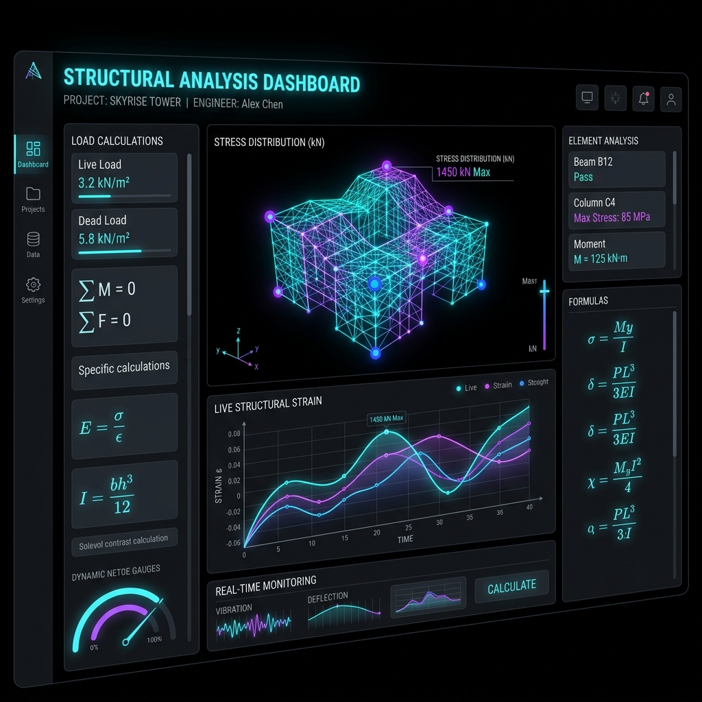
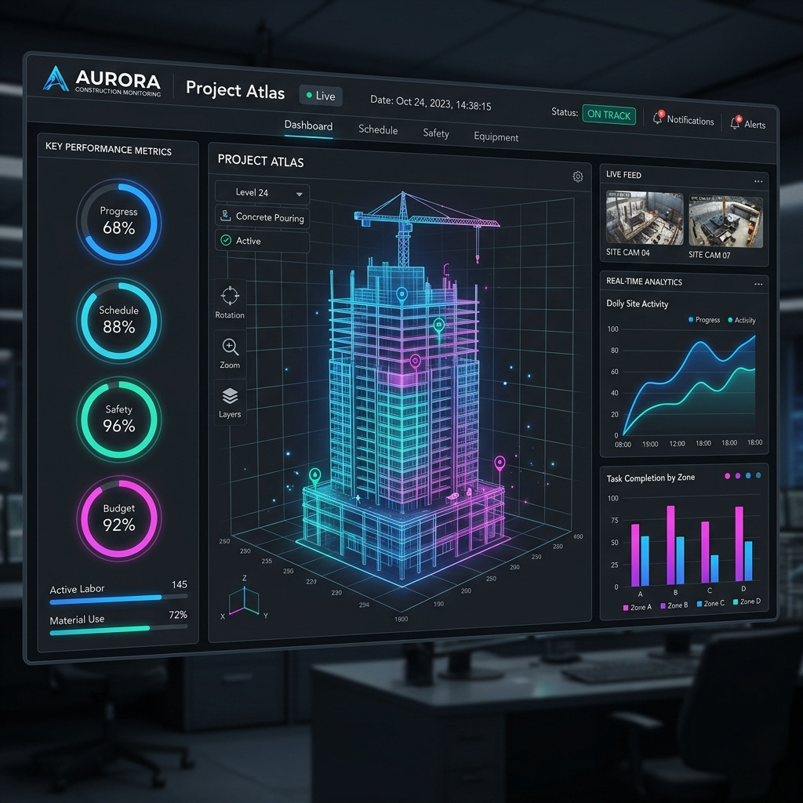

Proyectos Destacados
MIS PROYECTOS

Sistema de Automatización de Presupuestos
Una aplicación web interactiva para ingenieros y arquitectos que automatiza el cálculo de cantidades de obra, materiales y costos estructurales, reduciendo el tiempo de presupuesto manual en más del 70%.
Ver más
Panel de Control de Obra en Tiempo Real
Plataforma de monitoreo de datos de construcción con gráficos dinámicos e indicadores animados para el seguimiento en tiempo real del avance físico y los costos financieros del proyecto.
Ver más